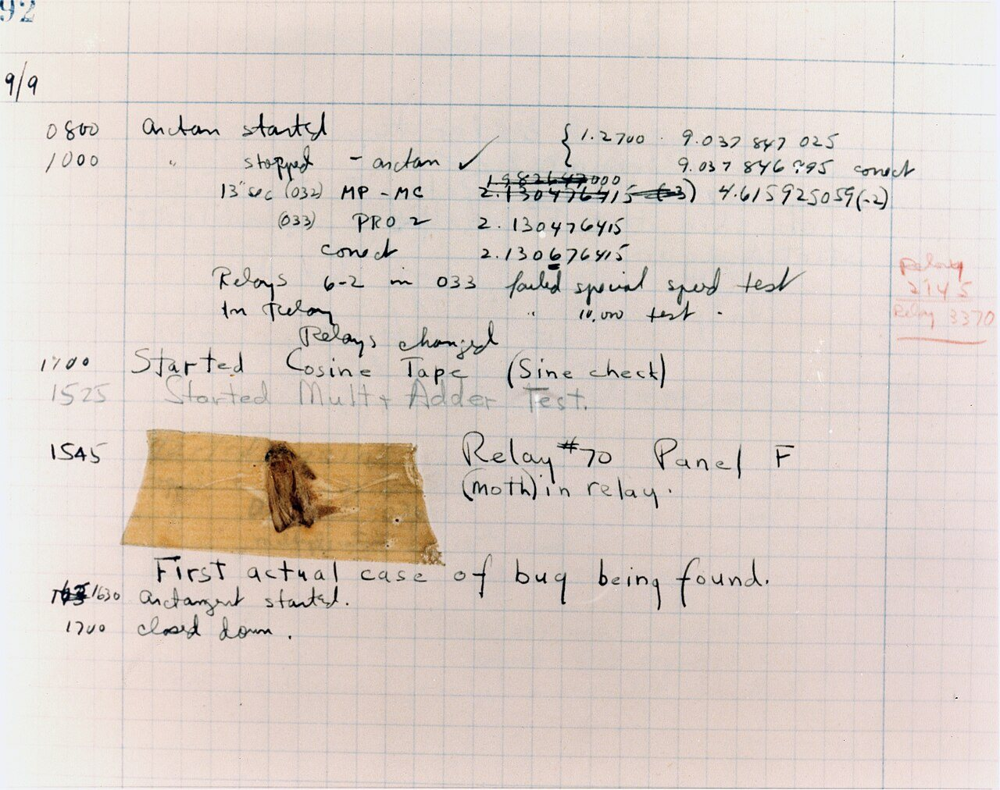

디버깅과 테스트
버그를 찾고, 고쳐졌는지 확인하기
프로그램이 생각대로 움직이지 않을 때가 있습니다. 이런 잘못을 버그라고 하고, 버그를 찾아 고치는 일을 디버깅이라고 합니다. 디버깅은 탐정이 범인을 찾는 일과 닮았습니다. 아무 데나 찔러 보는 것이 아니라 증거를 모아 범위를 좁혀 갑니다. 이 장에서는 버그를 찾는 순서와, 정말 고쳐졌는지 확인하는 방법을 배웁니다.
- 버그를 만났을 때 무엇부터 해야 하는지 순서대로 말할 수 있습니다.
- 오류 메시지를 읽고 어디서 문제가 났는지 찾을 수 있습니다.
- 고친 것이 정말 고쳐졌는지 확인하는 '테스트'를 설명할 수 있습니다.
- AI가 "고쳤습니다"라고 할 때 무엇을 확인해야 하는지 알 수 있습니다.
12.1버그 찾기는 찍기가 아니라 수사입니다#
탐정이 가장 먼저 배우는 것이 있습니다. 문제가 드러난 곳과 생긴 곳은 다를 수 있다는 점입니다.
식당에서 손님이 "국이 너무 짜요" 하고 말합니다. 문제가 드러난 곳은 식탁입니다. 하지만 국물은 냄비 안에서 이미 짰습니다. 그보다 먼저 누군가 레시피의 '소금 1큰술'을 '10큰술'로 잘못 적었습니다.
프로그램도 똑같습니다. 분식집 주문 앱을 만들었다고 합시다. 4,000원짜리 떡볶이에 10% 할인 쿠폰을 쓰면 3,600원이 나와야 합니다. 그런데 화면에 "결제에 실패했습니다"가 뜹니다.
속사정은 이렇습니다. 10%는 소수로 0.1입니다. 그런데 0.1을 넣을 자리에 누군가 10을 넣었습니다. 그 바람에 금액이 −36,000원으로 계산되었습니다. 마이너스 금액은 결제할 수 없으니 실패가 떴습니다.
이 세 단계에는 이름이 하나씩 있습니다.
- 결함(fault)은 잘못 쓴 곳입니다. 레시피의 오타이고, 0.1 자리에 넣은 10입니다. 흔히 버그라고 부릅니다.
- 오류(error)는 그 때문에 생긴 잘못된 값입니다. 짠 국물이고, −36,000원입니다.
- 실패(failure)는 눈에 보인 증상입니다. 손님의 항의이고, "결제에 실패했습니다"라는 화면입니다.
checkout과 total은 조금 뒤에 볼 코드에 나오는 이름입니다.평소에는 셋을 뭉뚱그려 버그나 에러라고 부릅니다.
디버깅은 눈에 보인 실패에서 출발해, 처음 잘못된 곳까지 거꾸로 올라가는 일입니다. 탐정은 수상해 보인다고 아무나 붙잡지 않습니다. 증거를 모아, 범인이 아닌 사람을 한 명씩 지웁니다. 이렇게 용의자를 줄여 갑니다.
문제가 드러난 곳은 수사의 출발점일 뿐입니다. 고칠 곳은 값이 처음 잘못된 곳입니다.

12.2먼저 다시 일으켜 보기: 재현#
자전거에서 가끔 끼익 소리가 납니다. 수리점에 가져갔더니 하필 그때는 소리가 안 납니다. 소리를 다시 낼 수 없으면 고치기 어렵습니다. 고쳐졌는지도 알 수 없습니다.
프로그램도 같습니다. 글 쓰는 앱을 만들었는데 누가 "저장이 안 돼요"라고 알려 왔습니다. 첫 단계는 같은 실패를 원할 때마다 다시 일으키는 것입니다. 이것을 재현(reproduction)이라고 합니다. 열 번 하면 열 번 실패하던 것이, 고친 뒤에는 열 번 모두 성공해야 "고쳤다"고 말할 수 있습니다.
재현이 되면 줄입니다. 알려 준 사람은 크롬 브라우저를 썼고, 사진을 3장 붙였고, 본문을 2,000자 썼고, 제목은 비워 두었습니다. 브라우저는 인터넷 화면을 보여 주는 프로그램입니다. 조건을 하나씩 바꿔서 다시 해 봅니다.
- 다른 브라우저로 해 봅니다. 그래도 실패합니다. 브라우저는 관계없습니다.
- 사진을 뺍니다. 그래도 실패합니다. 사진도 관계없습니다.
- 본문을 줄입니다. 그래도 실패합니다. 길이도 관계없습니다.
- 제목을 채웁니다. 저장됩니다. 빈 제목이 꼭 필요한 조건입니다.
관계없는 조건은 용의자에서 지웁니다. 이렇게 꼭 필요한 조건만 남긴 가장 짧은 방법이 최소 재현(minimal reproduction)입니다.
이제 빈 제목을 다루는 코드만 보면 됩니다.
① 어떤 기기와 버전인지 ② 무엇을 어떤 순서로 했는지 ③ 어떻게 되기를 바랐는지 ④ 실제로는 어떻게 됐는지 ⑤ 이미 해 본 것. 같은 게임도 휴대전화에 따라 안 켜질 때가 있듯, 기기와 버전이 다르면 결과가 달라집니다. 오류 메시지는 그대로 옮겨 적고, 비밀번호는 지웁니다.
12.3오류 메시지 읽기: 현장에 남은 발자국#
분식집 주문 앱으로 돌아갑니다. 최소 재현으로 줄였더니 결제하는 부분만 아래만큼 남았습니다. 파이썬(Python)이라는 프로그래밍 언어로 쓴 코드입니다. 파일 이름은 shop.py이고, 빈 줄까지 세어 13줄입니다.
def apply_coupon(price, rate):
return price * (1 - rate)
def pay(amount):
if amount <= 0:
raise ValueError(f"결제 금액이 올바르지 않습니다: {amount}")
print(f"{amount}원 결제 완료")
def checkout(price, rate):
total = apply_coupon(price, rate)
pay(total)
checkout(4000, 10)def로 시작하는 덩어리 셋은 함수입니다. 함수는 이름을 붙여 둔 일 묶음입니다. 이름을 부르면 그 일을 합니다.
- 1~2번 줄은
apply_coupon함수입니다. 가격(price)과 할인 비율(rate)을 받아 할인된 값을 돌려줍니다.*는 곱하기입니다.rate가 0.1이면 4000 × (1 − 0.1) = 3600입니다. - 4~7번 줄은
pay함수입니다.if는 "만약 ~이면"이라는 뜻입니다. 금액(amount)이 0 이하이면 6번 줄의raise가 오류를 일으켜 프로그램을 멈춥니다. 금액이 멀쩡하면 7번 줄의print가 "3600원 결제 완료"를 화면에 찍습니다.{amount}자리에 실제 금액이 들어갑니다. - 9~11번 줄은
checkout함수입니다. 할인된 값을 계산해total이라는 이름에 담고, 그 값을pay에 건넵니다. 함수에 값을 건네는 것을 "넘긴다"고 합니다. - 13번 줄이 실제로 일을 시키는 줄입니다. "4000원에 10% 쿠폰"이라는 뜻으로 10을 넘겼습니다.
터미널에 python3 shop.py라고 치면 이 파일이 실행되고, 아래 그림 같은 글이 쏟아집니다. 겁먹을 필요 없습니다. 오류가 난 순간에 어떤 함수가 어떤 함수를 불러 여기까지 왔는지 적어 준 기록입니다. 이것을 스택 트레이스(stack trace)라고 합니다. 3장에서 본 호출 스택을 찍어 준 것입니다.
<module>은 함수 밖, 곧 파일의 맨 바깥입니다.그림의 동그라미 번호를 따라갑니다.
- 맨 아래 줄부터 읽습니다. 오류의 종류와 메시지입니다.
ValueError는 "값이 이상하다"는 뜻입니다. −36000이 가장 큰 단서입니다. - 바로 위가 오류가 드러난 줄입니다.
pay의 6번 줄입니다. 하지만pay는 마이너스 금액을 보고 소리친 목격자일 뿐입니다. - 한 칸 위로 갑니다.
checkout의 11번 줄이total을 넘겼습니다. 그 값은 바로 윗줄에서apply_coupon이 계산했습니다. - 출발점까지 갑니다. 13번 줄이 비율 자리에 10을 넘겼습니다. 4000 × (1 − 10) = 4000 × (−9) = −36000입니다. 계산이 딱 맞습니다.
값을 계산한 apply_coupon은 이 목록에 없습니다. 이미 끝난 함수이기 때문입니다. 스택 트레이스에는 아직 끝나지 않은 함수만 나옵니다. 범인은 벌써 현장을 떠났을 수 있습니다.
AI에게 오류 메시지를 보여 주면, 그 줄을 try와 except라는 낱말로 감싸 줄 때가 있습니다. "오류가 나도 넘어가라"는 뜻입니다. 빨간 글씨는 사라지지만 −36000은 그대로입니다. 목격자의 입만 막은 셈입니다.
12.4짐작을 세우고 절반씩 좁히기#
방의 전등이 안 켜집니다. "전구가 나갔나?" 싶으면 다른 방의 멀쩡한 전구를 끼워 봅니다. 켜지면 짐작이 맞았습니다. 안 켜지면 전구는 범인이 아닙니다.
이렇게 실험으로 확인할 수 있는 짐작을 가설이라고 합니다. "뭔가 꼬인 것 같다"는 확인할 방법이 없으니 가설이 아닙니다. 쿠폰 버그에 써 봅시다. 실험하기 전에 "맞다면 무엇이 보일지"를 먼저 적습니다.
| 가설 | 실험 | 가설이 맞다면 | 실제로 본 것 |
|---|---|---|---|
| 결제 함수가 틀렸다 | pay(3600)만 실행 |
실패한다 | 성공. 용의자에서 뺌 |
| 할인 계산식이 틀렸다 | apply_coupon(4000, 0.1)만 실행 |
3600이 안 나온다 | 3600. 용의자에서 뺌 |
| 비율 자리에 10이 들어온다 | rate의 값을 화면에 찍기 |
10이 찍힌다 | 10. 범인 |
실험할 때는 한 번에 하나만 바꿉니다. 전구도 갈고 스위치도 바꾼 뒤에 불이 켜지면, 둘 중 무엇이 원인이었는지 알 수 없습니다.
용의자가 많을 때는 절반씩 자릅니다
친구가 1부터 100 사이에서 고른 수를 맞히는 업다운 놀이가 있습니다. "50?" 하고 가운데부터 물으면, 물을 때마다 남은 수가 절반이 됩니다. 일곱 번 안에 맞힙니다. 9장에서 본 이진 탐색입니다.
버그도 그렇게 찾습니다. "지난주에는 됐는데 오늘은 안 돼요"는 좋은 단서입니다. 그사이에 바꾼 것 가운데 범인이 있다는 뜻입니다.
7장에서 본 세이브 포인트, 곧 커밋이 16개 쌓여 있다고 합시다. 1번은 정상이고 16번은 실패합니다. 용의자는 2번부터 16번까지 15개입니다.
- 가운데인 8번을 실행합니다. 정상입니다. 9번부터 16번까지 8개가 남습니다.
- 12번을 실행합니다. 실패입니다. 9번부터 12번까지 4개가 남습니다.
- 10번을 실행합니다. 정상입니다. 11번과 12번이 남습니다.
- 11번을 실행합니다. 실패입니다. 11번에서 버그가 들어왔습니다.
하나씩 실행하면 많게는 14번인데, 절반씩 자르면 4번입니다. Git에는 가운데 커밋을 알아서 꺼내 주는 git bisect라는 명령이 있습니다.
12.5멈춰 세우고 들여다보기: print와 디버거#
가설을 확인하려면 "그 순간 그 값이 무엇이었나"를 봐야 합니다.
쉬운 방법은 값을 화면에 찍는 것입니다. 의심스러운 자리에 print("rate =", rate) 한 줄을 넣으면 그 순간의 rate 값이 찍힙니다. print 디버깅이라고 합니다. 다만 다른 값이 보고 싶어지면 코드를 고쳐 다시 실행해야 합니다.
축구 중계에서는 반칙을 가릴 때 영상을 멈추고 한 장면씩 넘겨 봅니다. 프로그램도 그렇게 볼 수 있습니다. 원하는 줄에서 멈춰 세우고 그 순간의 모습을 보여 주는 도구를 디버거(debugger)라고 합니다.
- 중단점(breakpoint)은 "이 줄에 오면 멈춰라" 하는 표시입니다. 코드를 쓰는 프로그램인 편집기에서 줄 번호 옆을 누르면 빨간 점이 찍힙니다.
- 한 줄 실행은 한 줄만 실행하고 다시 멈춥니다. '함수 안으로'는 그 줄이 부르는 함수 속으로 따라 들어갑니다.
- 변수와 호출 스택은 멈춘 순간의 값과 여기까지 온 길입니다. 변수는
rate,total처럼 값을 담아 둔 이름입니다.
rate가 10이고 total이 벌써 마이너스인 것이 한눈에 보입니다.VS Code라는 편집기에 파이썬 확장(덧붙이는 기능)을 설치하고 앞의 shop.py를 엽니다. 10번 줄 번호 왼쪽을 눌러 빨간 점을 찍고 F5를 누릅니다. 멈추면 F10으로 한 줄씩 넘겨 보세요.
12.6테스트: 버그가 돌아오면 울리는 경보기#
범인을 찾았으니 고칩니다. 쿠폰에는 "10% 할인"처럼 퍼센트 숫자가 적혀 있습니다. 그러니 함수가 퍼센트를 그대로 받게 고칩니다. 이름도 rate에서 percent로 바꿉니다. 파이썬 코드로 적으면 이렇습니다.
def apply_coupon(price, percent):
return price * (100 - percent) // 1002번 줄이 계산입니다. 10% 쿠폰이면 4000 × (100 − 10) = 360000입니다. 이것을 100으로 나누면 3600입니다. //는 소수점 아래를 버리는 나눗셈입니다.
된 것 같습니다. 하지만 "된 것 같다"를 어떻게 증명할까요? 수학 문제를 풀고 검산을 하듯, 프로그램도 검산을 합니다. 검산을 파이썬 코드로 적어 두고 컴퓨터에게 시킵니다.
def test_coupon_10_percent():
assert apply_coupon(4000, 10) == 3600- 1번 줄은 검산을 맡을 함수를 만듭니다.
- 2번 줄이 검산입니다.
assert는 "반드시 참이어야 한다",==는 "양쪽이 같은가"라는 뜻입니다. "4000원에 10% 쿠폰이면 반드시 3600"이라고 읽습니다. 아니면 오류를 내며 멈춥니다.
이렇게 "반드시 이래야 한다"를 코드로 적은 것을 단언(assertion)이라고 합니다.
코드를 실행해서 결과가 기대와 같은지 확인하는 작은 프로그램이 테스트(test)입니다. pytest 같은 도구가 테스트를 모아 돌리고, 몇 개가 통과했는지 알려 줍니다.
테스트는 버그가 다녀간 자리에 다는 경보기입니다. 두 가지 일을 합니다.
첫째, 고쳤다는 증거가 됩니다. 코드를 고치기 전에 테스트부터 써서 돌립니다. 고치기 전이라 값이 −36000이 나와 실패합니다. 코드를 고치고 다시 돌리면 3600이 나와 통과합니다. 빨강이 초록으로 바뀐 것이 증거입니다. 실패하는 모습을 본 적 없는 테스트는 울리는지 눌러 보지 않은 경보기와 같습니다.
둘째, 다시 고장 나면 알려 줍니다. 석 달 뒤 누가 할인 코드를 손보다 같은 버그를 되살릴 수 있습니다. 고쳤던 버그가 되살아나는 일을 회귀(regression)라고 합니다. 테스트를 남겨 두고 코드를 바꿀 때마다 돌리면 그날 바로 잡습니다.
"고쳤다"의 증거는 고치기 전에 실패하고 고친 뒤에 통과하는 테스트입니다. 말이나 느낌은 증거가 아닙니다.
12.7무엇을 넣어 볼까: 경계값과 테스트 피라미드#
떡볶이는 한 번에 1개부터 99개까지 주문할 수 있다고 합시다. 이 규칙을 시험하려면 어떤 수를 넣어 봐야 할까요? 모든 수를 넣어 볼 수는 없습니다.
먼저 같은 대접을 받는 수끼리 무리를 짓습니다. 0 이하는 거부, 1부터 99까지는 허용, 100 이상은 거부입니다. 무리 안쪽은 규칙이 같으니 대표 하나면 됩니다. 허용 무리는 50 하나로 충분합니다.
조심할 곳은 무리가 바뀌는 자리입니다. 이 자리의 값을 경계값(boundary value)이라고 합니다. 경계는 양쪽을 다 넣습니다.
그림 아래쪽의 코드를 봅시다. qty는 수량이고, <=는 "작거나 같다", <는 "작다"입니다. qty <= 99라고 써야 할 곳을 qty < 99로 잘못 썼습니다. 그러면 99개 주문이 거부됩니다. 50을 넣어서는 모릅니다. 99를 넣어야 들킵니다.
테스트 피라미드: 작은 것부터 많이
자전거를 조립하면 먼저 바퀴가 잘 도는지 부품을 하나씩 봅니다. 다음에는 브레이크를 잡으면 바퀴가 멈추는지 봅니다. 마지막으로 직접 타 봅니다. 테스트도 이렇게 셋으로 나눕니다.
- 단위 테스트(unit test)는 함수 하나만 시험합니다. 앞의 쿠폰 테스트가 그렇습니다. 빠르고, 실패하면 원인이 바로 옆에 있습니다.
- 통합 테스트(integration test)는 조각을 이어 붙여 시험합니다. 주문을 저장하면 진짜 데이터베이스에 들어가는지 봅니다. 데이터베이스는 자료를 모아 두는 곳이고, 그림에서는 DB라고 줄여 썼습니다.
- E2E 테스트(end-to-end test)는 손님처럼 처음부터 끝까지 해 봅니다. 주문하고, 결제하고, 주문 내역까지 확인합니다.
테스트 대역: 진짜 대신 세우는 가짜
소방 훈련을 할 때 진짜 불을 내지는 않습니다. 결제 시험도 할 때마다 진짜 돈이 빠져나가면 곤란합니다. 그래서 결제 부품 자리에 가짜를 끼웁니다. 가짜는 "결제 성공"이라고 정해 둔 답만 합니다. 영화의 대역 배우에 빗대어 테스트 대역(test double)이라고 합니다. "카드 거절" 같은 나쁜 상황도 원할 때 만들 수 있습니다.
대역의 대답은 내 상상입니다. 진짜 결제 회사가 다르게 답하면, 테스트는 통과하는데 실제 결제는 실패합니다.
12.8경보기를 믿을 수 있으려면#
아무 때나 울리는 경보기
양치기 소년은 늑대가 없는데도 "늑대다!" 하고 자꾸 외쳤습니다. 진짜 늑대가 왔을 때는 아무도 오지 않았습니다.
코드를 바꾸지 않았는데 통과와 실패를 오가는 테스트가 그렇습니다. 불안정한 테스트(flaky test)라고 합니다. 사람들이 "또 저러네" 하고 넘기다가 진짜 실패도 놓칩니다.
원인은 대개 돌릴 때마다 달라지는 것에 기대기 때문입니다. 지금 시각이나 주사위처럼 뽑는 수가 단골입니다. 쿠폰의 기한을 시험한다면 지금 시각을 테스트가 직접 넣어 줍니다. 기한이 100초라면 99초, 100초, 101초를 넣어 봅니다. 그러면 언제 돌려도 결과가 같습니다.
커버리지: 지나간 것과 확인한 것
교과서 50쪽을 눈으로 다 훑었다고 다 아는 것은 아닙니다. 문제를 풀어 봐야 압니다.
테스트를 돌리는 동안 코드의 몇 퍼센트가 실행됐는지 나타내는 숫자를 커버리지(coverage)라고 합니다. 아래 그림의 shipping 함수는 배달비(fee)를 먼저 3000원으로 정합니다. 회원(member)이면 0원으로 바꿉니다. 이 함수를 shipping(True), 곧 "회원이다"로 한 번 부르기만 한 테스트가 있습니다.
- 줄 커버리지 100%: 다섯 줄을 모두 지나갔습니다.
- 분기 커버리지 50%: 분기는 갈림길입니다.
if의 두 길 가운데 회원인 길만 갔습니다. - 결과 확인 0개: 배달비가 정말 0원인지
assert로 본 적이 없습니다.
커버리지는 안 가 본 곳을 알려 주는 지도입니다. 낮으면 시험이 모자란 것이 분명합니다. 하지만 높다고 충분한 것은 아닙니다.
"테스트 통과"라는 말도 몇 개가 실행됐는지를 함께 봅니다. 새로 쓴 테스트는 실행되지 않고, 예전 것만 통과했을 수도 있습니다.
12.9느린 것도 버그입니다#
등교 준비에 40분이 걸려 자꾸 지각합니다. 양치가 길다고 짐작해 3분을 2분으로 줄였지만 39분입니다. 시계로 재 보니 옷을 고르는 데 20분을 쓰고 있었습니다.
프로그램이 느릴 때도 짐작하지 말고 잽니다. 주문 단추를 누르면 2초가 걸린다고 합시다. 쿠폰 계산이 느릴 것 같다는 짐작이 듭니다.
실행 시간을 함수별로 재 주는 도구를 프로파일러(profiler)라고 합니다. 실행 중인 프로그램을 짧은 간격으로 들여다보며 "지금 어느 함수 안에 있나"를 적습니다. 100번 가운데 70번이 같은 함수였다면 그 함수가 시간의 70%를 쓴 것입니다.
이 기록을 상자로 쌓은 그림이 플레임 그래프(flame graph)입니다.
상자가 넓을수록 시간을 많이 쓴 곳입니다. 아래 상자의 함수가 바로 위 상자의 함수를 불렀습니다.
- 맨 아래
handle_order는 주문 한 건을 처리하는 함수입니다. 전체이니 100%입니다. - 그 위는 메뉴 읽어 오기(
load_menu) 70%, 쿠폰 계산(apply_coupon) 5%, 주문 저장(save_order) 25%입니다. - 맨 위는 한 단계 더 들어간 것입니다. 메뉴 읽어 오기는 파일 읽기(
read_file) 20%와 읽은 글 풀이하기(parse_json) 50%로 나뉩니다. 주문 저장 가운데 20%는 자료를 써넣는db_write입니다.
쿠폰 계산을 두 배 빠르게 해도 5%가 2.5%로 줄 뿐입니다. 2초에서 0.05초가 줄어듭니다. 반대로 메뉴는 주문마다 다시 읽을 필요가 없습니다. 처음 한 번만 읽어 두면 70%, 곧 1.4초가 거의 사라집니다. 이렇게 전체를 붙잡는 곳이 1장에서 본 병목입니다.
고친 뒤에는 같은 조건에서 시간을 여러 번 다시 잽니다. 답이 여전히 맞는지도 봅니다. 빨라졌는데 답이 틀리면 고친 것이 아닙니다.
헷갈리기 쉬운 짝#
| 짝 | 차이 |
|---|---|
| 결함 / 실패 | 잘못 쓴 곳 / 눈에 보인 증상 |
| 오류가 드러난 줄 / 원인이 된 줄 | 오류 메시지가 가리키는 곳 / 값을 처음 잘못 만든 곳 |
| 줄 커버리지 / 분기 커버리지 | 지나간 줄의 비율 / 지나간 갈림길의 비율 |
| 테스트 통과 / 버그 없음 | 확인한 것 중에는 틀린 것이 없음 / 확인하지 않은 것까지 맞음 |
실전 사례#
AI의 도움으로 숙제 목록 앱을 만들었습니다. 숙제를 적고 저장을 누르면 "저장 완료"가 뜹니다. 그런데 앱을 껐다 켜면 적은 것이 사라집니다. AI에게 고쳐 달라고 했더니 "고쳤습니다. 저장 완료 알림이 잘 뜹니다"라고 답합니다.
- 재현하고 줄입니다. "수학 익힘책 32쪽" 하나만 적고, 저장하고, 껐다 켭니다. 열 번 모두 사라집니다.
- 절반으로 좁힙니다. 저장을 누른 바로 뒤에 저장 파일을 열어 봅니다. 비어 있습니다. 범인은 저장하는 쪽에 있습니다.
- 가설을 실험합니다. "저장에 실패해도 '저장 완료'를 띄운다"가 맞다면, 일부러 저장을 실패시켜도 알림이 떠야 합니다. 정말 뜹니다. 저장하다 난 오류를 덮어서 숨기는 코드가 있었습니다.
- 테스트를 먼저 씁니다. "저장한 뒤 다시 불러오면 같은 글이 나온다"입니다. 돌려 보니 실패합니다.
- 고치고 다시 돌립니다. 테스트가 통과합니다. 껐다 켜도 숙제가 남아 있습니다.
AI는 알림이 뜨는지만 확인했습니다. 화면의 "완료"는 증거가 아닙니다. 증거는 다시 불러온 자료입니다.
한눈에 정리#
- 문제가 드러난 곳과 생긴 곳은 다릅니다. 디버깅은 실패에서 거꾸로 올라가는 수사입니다.
- 먼저 재현합니다. 그다음 조건을 하나씩 빼서 최소 재현으로 줄입니다.
- 스택 트레이스는 아래에서 위로 읽습니다. 오류가 드러난 줄은 목격자일 뿐, 범인이 아닐 수 있습니다.
- 가설은 실험으로 확인하고, 한 번에 하나만 바꿉니다. 용의자가 많으면 절반씩 자릅니다.
- 테스트는 경보기입니다. 고치기 전에 실패하고 고친 뒤에 통과해야 증거가 됩니다. 남겨 두면 회귀를 잡습니다.
- 넣어 볼 값은 경계값에서 고릅니다. 빠른 단위 테스트를 가장 많이 둡니다.
- 커버리지 100%도 "테스트 통과"도 무엇을 확인했는지 봅니다. 느린 곳은 프로파일러로 잽니다.
확인 문제#
지호가 만든 게임을 해 본 친구가 "하다 보면 가끔 멈춰"라고만 말했습니다. 지호는 코드를 고치기 전에 무엇부터 해야 할까요?
정답 보기
재현입니다. 어떤 기기에서, 무엇을 어떤 순서로 누른 뒤에 멈췄는지 묻습니다. 같은 멈춤을 원할 때마다 다시 일으킬 수 있어야 합니다. 그러지 못하면 고친 뒤에도 고쳐졌는지 알 수 없습니다.
체온계가 38도를 가리켰습니다. 체온계를 서랍에 넣으면 열이 내린 걸까요? AI가 오류가 나던 줄을 "오류가 나도 넘어가라"는 코드로 감쌌더니 빨간 글씨가 사라졌습니다. 둘은 무엇이 닮았을까요?
정답 보기
둘 다 알려 주는 쪽만 치웠습니다. 열도, 잘못된 값도 그대로입니다. 오류 메시지는 목격자일 뿐입니다. 그 값이 어디서 처음 잘못됐는지 거슬러 올라가 찾아야 합니다.
놀이기구에 "키 120cm 이상만 탈 수 있음"이라는 규칙이 있습니다. 키를 재는 기계를 시험하려고 150cm인 사람을 보냈더니 통과했습니다. 무엇이 빠졌을까요?
정답 보기
경계값입니다. 119cm(막아야 함)와 120cm(통과해야 함)를 보내 봐야 합니다. 기계가 "120cm보다 커야 통과"로 잘못 맞춰져 있어도 150cm는 통과합니다. 딱 120cm를 보내야 드러납니다.
은서는 일기 앱의 버그를 고친 다음에야 테스트를 하나 썼습니다. 돌려 보니 통과했습니다. 이 테스트가 그 버그를 잡아 준다고 믿어도 될까요?
정답 보기
아직 모릅니다. 이 테스트가 실패하는 모습을 본 적이 없기 때문입니다. 버그가 있든 없든 통과하는 테스트일 수 있습니다. 고친 것을 잠깐 되돌려 놓고 돌려서, 실패하는지 확인합니다.
급식 줄이 길어 점심시간이 모자랍니다. 식판 집는 곳이 느린 것 같아 식판을 두 군데에 쌓아 두었는데 줄은 그대로입니다. 무엇을 먼저 했어야 할까요?
정답 보기
어디서 시간이 걸리는지 재 봐야 했습니다. 식판 집기는 2초, 국 받기는 20초였다면 줄을 붙잡는 곳은 국입니다. 프로그램도 프로파일러로 잰 다음, 가장 넓은 상자부터 고칩니다.
AI에게 맡길 때#
AI에게 버그를 고쳐 달라고 할 때는 "고쳐 줘"에서 멈추지 마세요. 찾은 순서와 증거를 함께 보여 달라고 하세요.
10% 쿠폰을 쓰면 결제가 실패해. 원인을 찾아서 고쳐 줘. 먼저 이 문제를 다시 일으키는 가장 짧은 방법을 보여 줘. 원인이 무엇인지, 어떻게 확인했는지도 적어 줘. 고치기 전에 이 버그를 잡는 테스트를 쓰고, 실패하는 결과를 보여 줘. 그다음에 고치고, 같은 테스트가 통과하는 결과를 보여 줘. 오류를 숨기기만 하는 코드는 쓰지 마. 있던 테스트도 지우지 마. 실제로 실행해 본 것과 해 보지 못한 것을 나눠서 알려 줘.
받은 답에서 볼 것: 고치기 전의 실패와 고친 뒤의 통과가 둘 다 있는지 봅니다. 새 테스트가 실행 결과에 정말 나오는지 봅니다. 기대하는 값을 슬쩍 바꾸거나 assert를 지워서 통과시키지 않았는지도 봅니다.
용어 정리#
- 결함fault
- 코드에서 잘못 쓴 곳. 흔히 버그라고 부르는 것.
- 최소 재현minimal reproduction
- 꼭 필요한 조건만 남긴, 실패를 다시 일으키는 가장 짧은 방법.
- 스택 트레이스stack trace
- 오류가 난 순간 어떤 함수들을 거쳐 왔는지 적어 준 기록.
- 디버거debugger
- 프로그램을 원하는 줄에서 멈춰 세우고 그 순간의 값을 보여 주는 도구.
- 중단점breakpoint
- "이 줄에 오면 멈춰라" 하고 디버거에 해 두는 표시.
- 단언assertion
- "여기서는 반드시 이래야 한다"를 코드로 적어 둔 것.
- 테스트test
- 코드를 실행해서 결과가 기대와 같은지 확인하는 작은 프로그램.
- 회귀regression
- 고쳤던 버그가 나중에 코드를 바꾸다가 되살아나는 일.
- 경계값boundary value
- 규칙이 바뀌는 자리의 값. 1~99라면 0, 1, 99, 100.
- 단위 테스트unit test
- 함수 하나처럼 작은 조각만 시험하는 빠른 테스트.
- 테스트 대역test double
- 시험할 때 진짜 부품 대신 끼워 넣는 가짜.
- 불안정한 테스트flaky test
- 코드를 바꾸지 않았는데 통과와 실패를 오가는 테스트.
- 커버리지coverage
- 테스트를 돌리는 동안 실행된 코드의 비율.
- 프로파일러profiler
- 실행 시간을 함수별로 나눠 재 주는 도구.
더 읽을거리#
- Python — 에러와 예외 — 파이썬의 오류 메시지 읽는 법을 알려 주는 한국어 자습서입니다.
- VS Code — Debug code — 중단점과 한 줄씩 실행을 화면 사진으로 보여 주는 영어 문서입니다.